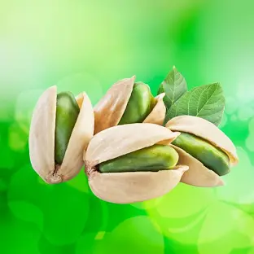
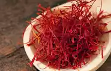

انواع محصولات
پسته از آجیل های خوشمزه پرطرفدار با ارزش غذایی بالا است که علاوه بر خواص بی نظیرش برتی بسیاری از بیماری ها مفید است

پسته
زعفران گیاهی است چند ساله که دارای پیاز می باشد که دارای غلاف قهوه ای رنگی است که در جنوب اسیا اروپا و اسپانیا روییده میشود

زعفران